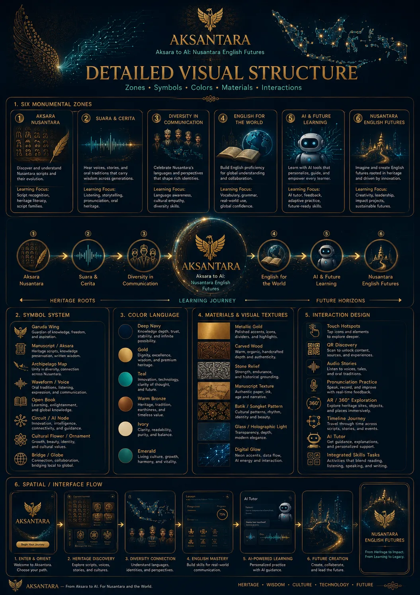
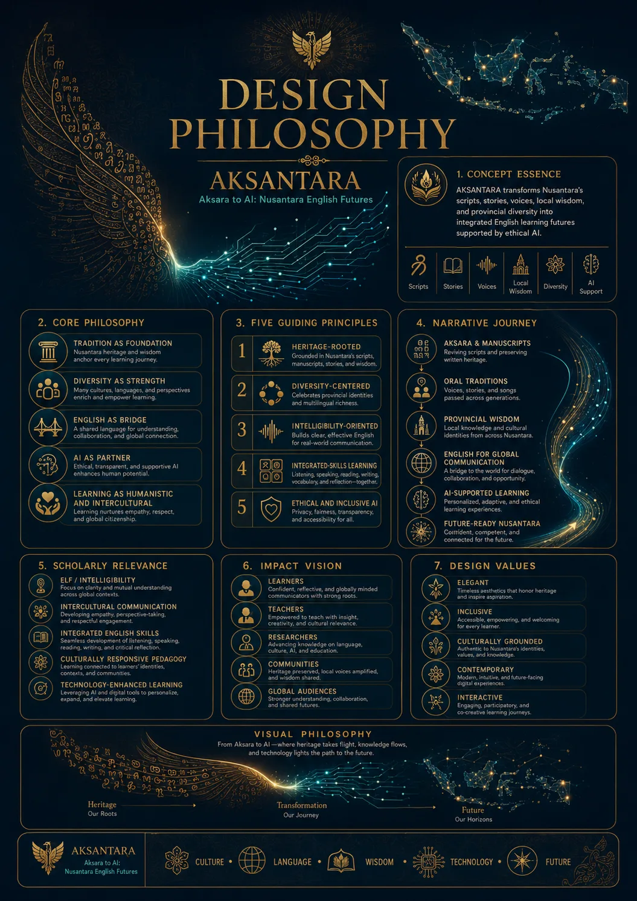
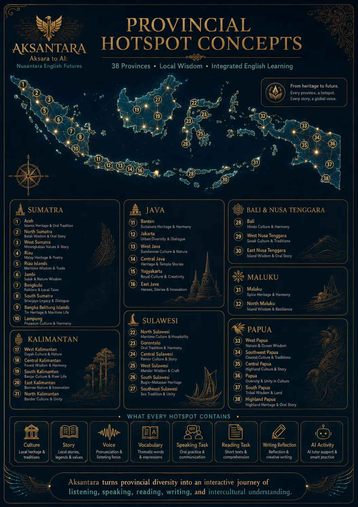
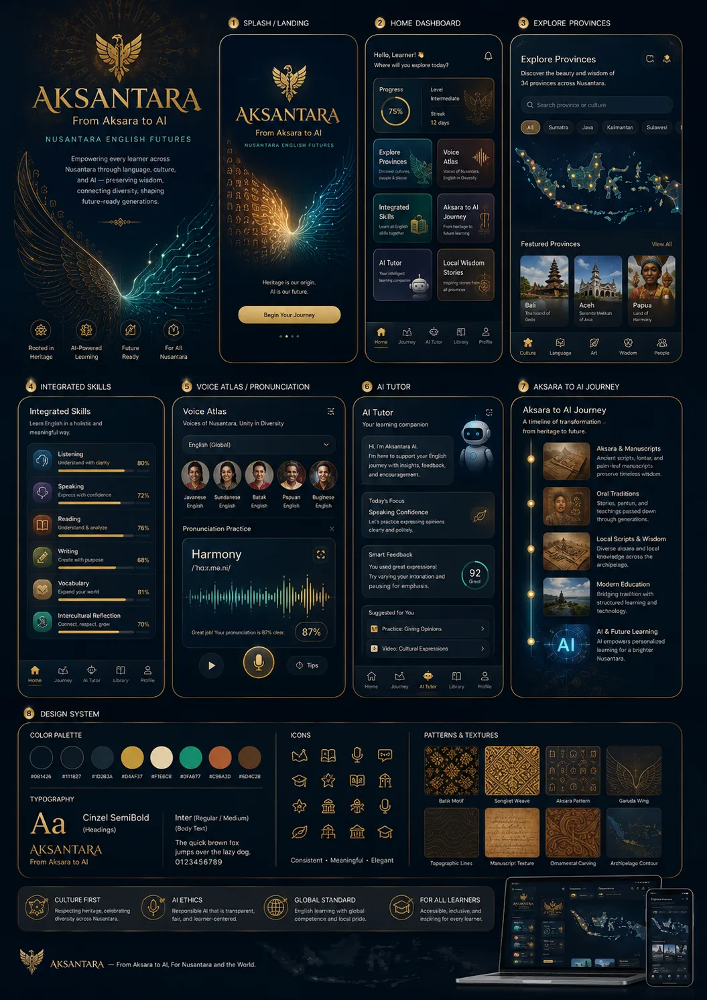

AKSANTARA
From Aksara to AI
AKSANTARA is an executive 4D edu-cultural app that transforms Aksara Nusantara, local wisdom, oral traditions, provincial diversity, and integrated English skills into an interactive learning journey. Every province becomes a living hotspot: culture, script, voice, vocabulary, reading, speaking, writing, and ethical AI support.
Province Hotspots
Aksara Families
Living Zones
Offline Static App
Aksara becomes a bridge
Heritage roots, English communication, and future learning glow together.
Six Living
Zones
The six zones are not decorative. Each zone opens and connects to a working app feature.
Heritage Roots
Aksara, manuscripts, stories, voices, and provincial wisdom become the foundation for meaningful English learning.
AKSANTARA
Aksara to AI
Future Horizons
AI, QR, audio, 4D exploration, and integrated-skills tasks help learners communicate globally without losing cultural identity.
Province
Hotspots
Select any province. The whole app updates automatically: Aksara Studio, Skills, Voice Atlas, AI Tutor, QR Station, and Admin statistics.
Aksara
Studio
Every province introduces a local script tradition, manuscript spirit, local wisdom, and English-learning transformation.
Trace or draw script-inspired forms above. This works offline and saves the selected province context.
Heritage-to-English Mission
Skills
Lab
Tasks are integrated with the selected province and its Aksara heritage.
Selected Province
Voice
Atlas
All provinces have a model sentence and pronunciation focus for intelligible English.
Ready for practice.
Pronunciation Focus
“Our local script and wisdom can speak to the world through English.”
Intelligibility Score
Ready
AI
Tutor
No API key required. The offline tutor gives guided prompts based on the selected province.
Aksantara AI
Suggested Prompts
QR
Station
Generate and download province QR cards for exhibitions and classroom stations.
Hotspot Functions Used Across App
Dossier
Reference boards are included as a professional dossier. The actual app features are live and clickable.




Admin
Admin is locked
Enter owner PIN to unlock settings and statistics.